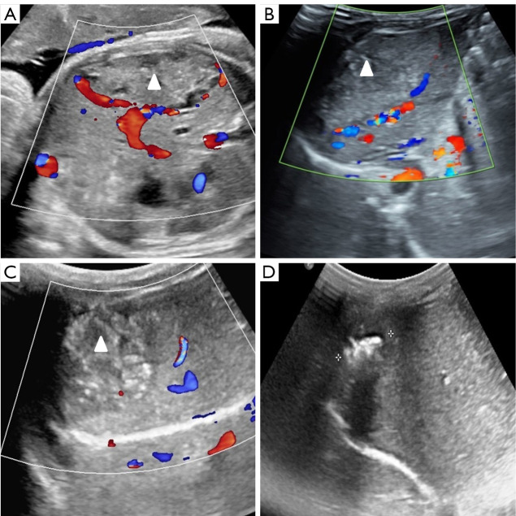
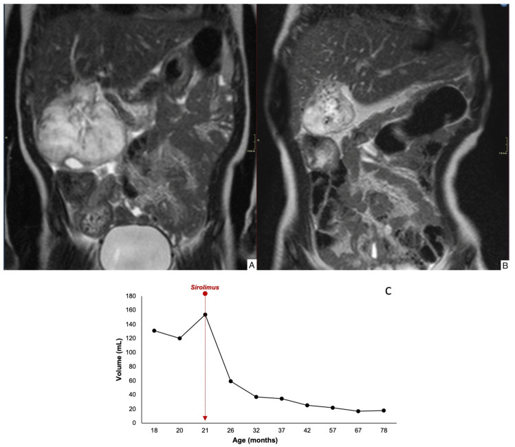
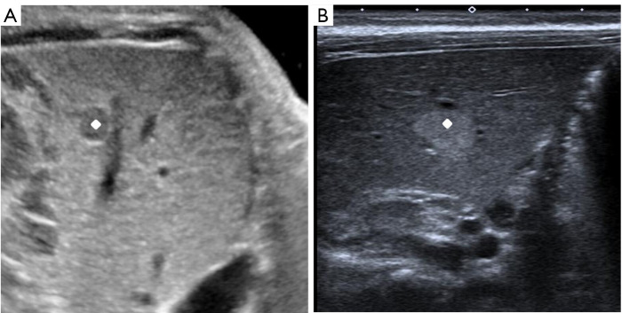

3052 — U mạch máu gan bẩm sinh (RICH/NICH) & thể một ổ ở trẻ: phân biệt IHH, khi nào theo dõi, khi nào can thiệp
Tags: pattern:u-mau-gan pattern:o-don-doc-gan pattern:shunt-dong-tinh-mach vung:gan anatomy:gan protocol:Sieu-am-Doppler protocol:MRI-gan protocol:propranolol protocol:sirolimus incidentaloma:u-mau-gan
Mức chắc chắn (certainty): tổng hợp y văn (literature synthesis) — ghép 12 sơ sinh u mạch máu gan bẩm sinh + tổng quan (Front Pediatr 2025, PMC12066750), 7 ca NICH gan theo dõi tới 191 tháng (Children (Basel) 2025, PMC12293984), 54 thai nhi có siêu âm trước sinh dự báo suy tim (Quant Imaging Med Surg 2026, PMC12780712) và bài nền 3048 – U máu gan ở nhũ nhi (J Clin Med 2024, PMC11122465). Không có ca do nhóm tự chụp.
Câu hỏi thực hành: bé gái 1 tháng tuổi, siêu âm trước sinh lúc 34 tuần thấy khối giảm âm 0,7 × 0,8 cm ở gan phải; nay khối tăng âm 1,4 × 1,1 cm, trẻ hoàn toàn khỏe, không u máu da, AFP bình thường. Câu hỏi: đây là u mạch máu nhũ nhi (IHH) hay u mạch máu bẩm sinh (CHH), có cần propranolol, và theo dõi bao lâu trước khi kết luận “không thoái triển”? Bài chốt ba quyết định: (1) tổn thương MỘT Ổ đã có kích thước tối đa lúc sinh = u mạch máu bẩm sinh (CHH), không phải IHH — đừng mặc định “u máu gan là cho propranolol”; (2) phân biệt RICH (thoái triển nhanh, ~80% thể tích trong 12 tháng) với NICH (không thoái triển, có thể lớn theo trẻ) cần theo dõi tối thiểu 18 tháng; (3) nguy cơ thật là shunt → suy tim, dự báo được từ trước sinh bằng đường kính > 4,85 cm. Nối 3048 – U máu gan ở nhũ nhi, 3005 – U máu dưới thanh môn, 1804 – Suy giáp tiêu thụ do D3, 630 – Khối u đặc ổ bụng trẻ, 674 – U quái gan.
1. Tổng quan bệnh học – cơ chế hình ảnh: vì sao “một ổ” là một bệnh khác
- Phân loại trước khi chẩn đoán (ISSVA 2018): u mạch máu gan (hepatic hemangioma) chia hai nhóm hoàn toàn khác nhau:
- U mạch máu bẩm sinh (congenital hemangioma, CHH) — đã phát triển đầy đủ trong tử cung, không có pha tăng sinh sau sinh, GLUT1 âm. Gồm RICH (thoái triển nhanh), PICH (thoái triển một phần), NICH (không thoái triển). Có báo cáo thêm thể thứ tư: tăng sinh ngắn ngay sau sinh rồi thoái triển (PMC12066750).
- U mạch máu nhũ nhi (infantile hepatic hemangioma, IHH) — xuất hiện sau sinh 1–4 tuần, có pha tăng sinh 3–9 tháng rồi thoái triển, GLUT1 dương. Thường đa ổ hoặc lan tỏa, hay kèm u máu da.
- Quy tắc vàng về số lượng ổ: tổn thương MỘT Ổ (focal) trong gan ở trẻ sơ sinh chính là CHH — đây là kết luận được Liver Hemangioma Registry (Boston Children's Hospital) xác nhận và được nhắc lại trong loạt NICH (PMC12293984). Ngược lại, nhiều ổ/lan tỏa gợi IHH. Vì vậy câu hỏi đầu tiên trên siêu âm không phải “kích thước bao nhiêu” mà là “một ổ hay nhiều ổ”.
- TẠI SAO GLUT1 là chốt mô bệnh: GLUT1 (glucose transporter 1) được biểu hiện ở nội mô u mạch máu nhũ nhi (kiểu “nhau thai”) nhưng không có ở CHH. Trong loạt 12 sơ sinh, ảnh hóa mô miễn dịch cho thấy tế bào nội mô không biểu hiện GLUT-1, trong khi hồng cầu dương tính nội chứng — đúng kiểu CHH (PMC12066750). Vì vậy một mẫu mô nhỏ GLUT1 âm đủ để loại IHH.
- TẠI SAO MRI T2 rất sáng: CHH là tổn thương mạch máu lưu lượng cao với hồ mạch (venous lakes) giãn, chậm dòng chứa nhiều huyết tương → T2 tăng tín hiệu mạnh, gần bằng dịch não tủy. Sau tiêm, tổn thương ngấm mạnh thì động mạch và tiếp tục ngấm/ứ ở thì muộn (pooling), không thải thuốc như HCC. Đây là lý do “T2 sáng + ngấm mạnh kéo dài” gợi ý mạch máu, không gợi ác tính.
- TẠI SAO siêu âm đổi âm sắc theo thời gian — điều dễ đọc sai nhất: trong ca NICH kinh điển của loạt 54 thai nhi, khối giảm âm trước sinh (34 tuần, 0,7 × 0,8 cm) nhưng tăng âm sau sinh (1,4 × 1,1 cm) (PMC12780712). Cơ chế được cho là thay đổi thành phần mô đệm/xơ hóa và mạng mạch trong quá trình “chín” của tổn thương, không phải xuất huyết. Vì vậy tăng âm sau sinh không loại trừ CHH, và không được gọi là “di căn/u ác mới xuất hiện”.
- TẦN SUẤT và định nghĩa “khổng lồ”: CHH khổng lồ được định nghĩa > 4 cm, tần suất 0,64/10.000 trẻ sinh sống; thể khổng lồ có biến chứng có tử vong 30–100% nếu không điều trị (PMC12066750 dẫn lại). Trong 12 sơ sinh của loạt, tất cả đều là thai đủ tháng (37 tuần 1 ngày – 40 tuần 1 ngày), cân nặng 2.650–3.900 g, và tất cả đều được phát hiện trước sinh bằng siêu âm thai (1 ngày – 14 tuần trước sinh).
- Diễn tiến tự nhiên – con số dùng để tư vấn: RICH giảm khoảng 80% thể tích quanh 12 tháng tuổi; NICH không thoái triển sau sinh và có thể lớn theo tỷ lệ cơ thể; PICH ở giữa (PMC12780712). Vì vậy kết luận “NICH” chỉ được đặt sau khi theo dõi ≥ 18 tháng không có dấu hiệu thoái triển — đúng tiêu chuẩn của loạt 7 ca (PMC12293984).
- NICH gan — bằng chứng dài hạn: 7 bệnh nhân (5 nữ/2 nam), tuổi chẩn đoán trung vị 42 ngày (0–1.440), 5/7 không triệu chứng, chủ yếu thùy phải; theo dõi trung vị 75 tháng (35–191). Trong 4 ca không điều trị, diễn tiến rất khác nhau: có ca thoái triển muộn, có ca lớn muộn (tardive growth). Ba ca NICH khổng lồ được điều trị sirolimus: 2 ca đáp ứng một phần, 1 ca ổn định (PMC12293984). Một ca có đột biến GNAQ — gợi ý NICH thuộc nhóm dị dạng mạch do đột biến GNAQ/GNA11, không phải u tân sinh thật.
- Nguy cơ thật: shunt → suy tim. Trong 12 sơ sinh, 11 ca có tiểu cầu và đông máu bình thường; 1 ca (số 12) có giảm tiểu cầu + rối loạn đông máu + suy tim phải lúc sinh: tiểu cầu 92 → 89 × 10⁹/L, fibrinogen 1,34 → 0,91 g/L, NT-proBNP 45.759 → 54.867 pg/mL, khối 7,5 × 6,1 cm → 7,0 × 6,2 cm. Ca này thất bại propranolol + methylprednisolone, được nút mạch qua da ngày thứ 9 và tử vong ngày thứ 2 sau nút (PMC12066750). Bài học: suy tim do shunt là biến chứng quyết định tử vong, và “thuốc uống” không đủ nhanh ở thể này.
- Dự báo suy tim từ TRƯỚC SINH — bộ số liệu mạnh nhất: trong 54 thai nhi có CHH, nhóm suy tim sau sinh khác biệt rõ:
- Đường kính khối 6,5 cm vs 3,8 cm (p = 0,001); ngưỡng > 4,85 cm dự báo suy tim với AUC 0,859, độ nhạy 100%, độ đặc hiệu 70,2%.
- Tỷ lệ tim/ngực (cardiothoracic ratio) 0,40 vs 0,27 (p < 0,0001).
- Shunt cửa–hệ thống: 100% vs 19,1%; hồ mạch (venous lakes): 100% vs 10,6%; giãn tĩnh mạch gan: 100% vs 48,9%; giãn động mạch gan: 100% vs 36,2%; nguồn cấp kép (tĩnh mạch cửa + động mạch gan): 57,1% vs 12,8% (PMC12780712).
- TẠI SAO các dấu hiệu trên lại dự báo suy tim: suy tim ở CHH là suy tim cung lượng cao do shunt trong u. Ba biến số sinh lý quyết định: (1) thể tích shunt (khối lớn, nhiều hồ mạch), (2) đường thoát (giãn tĩnh mạch gan → máu về tim phải nhiều), (3) khả năng bù của tim sơ sinh. Vì vậy kích thước khối và shunt cửa–hệ thống dự báo mạnh hơn “vị trí thùy gan”.
2. Mẫu hình + chẩn đoán phân biệt theo tuổi và hành vi (Gamut)
- Theo thời điểm phát hiện:
- Trước sinh / ngay sau sinh, một ổ, không lớn thêm → CHH (RICH/PICH/NICH).
- 2 tuần–3 tháng, nhiều ổ/lan tỏa, kèm u máu da → IHH.
- 6 tháng–3 tuổi, khối đặc không đồng nhất, AFP tăng → hepatoblastoma (bài 3048).
- Theo hành vi sau sinh — trục phân loại CHH:
- Nhỏ dần nhanh, hết sau 6–18 tháng → RICH (giảm ~80% thể tích quanh 12 tháng).
- Giảm một phần rồi dừng → PICH.
- Không giảm sau 18 tháng, có thể lớn theo trẻ → NICH.
- Lớn nhanh trong vài tháng đầu rồi thoái triển → thể thứ tư (postnatal proliferation) — dễ bị gọi nhầm là IHH.
- Theo hình thái trên siêu âm/MRI:
- Một ổ đặc, bờ rõ, có hồ mạch → CHH.
- Nhiều ổ nhỏ rải rác → IHH đa ổ.
- “Vô số ổ” thay gần toàn bộ gan → IHH lan tỏa (nặng nhất, bài 3048).
- Khối đa nang vách mỏng → mesenchymal hamartoma.
- Khối đặc có vôi hóa thô → hepatoblastoma.
- Gamut chính cần loại trừ: IHH · hepatoblastoma · mesenchymal hamartoma · sarcoma phôi chưa biệt hóa (undifferentiated embryonal sarcoma, thường 6–10 tuổi, dạng nang giả) · KHE/kaposiform hemangioendothelioma (Kasabach–Merritt) · di căn neuroblastoma · áp-xe gan · nang gan đơn thuần.
- Bảng “một câu chốt”: một ổ + có từ trong tử cung + GLUT1 âm = CHH; nhiều ổ + xuất hiện sau sinh + GLUT1 dương = IHH; AFP tăng dần + vôi hóa = hepatoblastoma; giảm tiểu cầu nặng = KHE.
3. Bảng so sánh phân biệt (ma trận đối chiếu)
| Thực thể (entity) | Hình ảnh điển hình | Chốt vào (rule-in) | Chốt loại (rule-out) | Gợi ý xác nhận |
|---|---|---|---|---|
| CHH – RICH | Một ổ, bờ rõ, siêu âm hỗn hợp âm, Doppler có mạch; MRI T2 rất sáng, ngấm mạnh thì động mạch + ứ thì muộn | Đã tối đa lúc sinh + nhỏ dần ~80% trong 12 tháng + GLUT1 âm | Nhiều ổ, lớn dần sau sinh, có u máu da → IHH | Siêu âm Doppler cách 4–8 tuần; MRI nếu không rõ |
| CHH – NICH | Một ổ, trước sinh giảm âm, sau sinh tăng âm; có thể có hồ mạch, vôi hóa, xơ trung tâm | Không thoái triển ≥ 18 tháng + GLUT1 âm (± GNAQ) | Nhỏ dần rõ trong 6–12 tháng → RICH | Theo dõi thể tích định kỳ; sinh thiết khi nghi ác |
| CHH – thể tăng sinh sau sinh | Một ổ, lớn nhanh vài tháng đầu rồi thoái triển; có từ trong tử cung | Có trước sinh + lớn ngắn rồi giảm | Lớn liên tục, nhiều ổ, u máu da → IHH | Chuỗi siêu âm; GLUT1 âm |
| IHH đa ổ/lan tỏa | Nhiều ổ giảm âm, T2 sáng đều, gan to, Doppler tăng lưu lượng; kèm u máu da ≥ 5 | Xuất hiện sau sinh + nhiều ổ + u máu da + GLUT1 dương | Một ổ có từ trong tử cung → CHH | Siêu âm + MRI; TSH/fT4/rT3; siêu âm tim |
| Hepatoblastoma | Khối đặc không đồng nhất, vôi hóa 40–50%, có thể xâm lấn tĩnh mạch cửa | AFP tăng dần + vôi hóa + tuổi 6 tháng–3 tuổi | AFP giảm dần, nhiều ổ T2 sáng đều → mạch máu | AFP + MRI/CT; sinh thiết trước hóa trị |
| Mesenchymal hamartoma | Khối đa nang, vách mỏng, dịch; có thể chiếm cả thùy | Khối nang nhiều vách + AFP bình thường + < 2 tuổi | Khối đặc ngấm mạnh → CHH | MRI/CT; sinh thiết nếu không rõ |
| KHE (Kasabach–Merritt) | Khối mờ, xâm lấn, mô mềm quanh gan, có thể tràn dịch | Giảm tiểu cầu nặng + rối loạn đông máu | Tiểu cầu bình thường, một ổ rõ → CHH | Công thức máu, đông máu, MRI |
| Di căn neuroblastoma | Nhiều nốt gan + khối thượng thận nguyên phát, di căn xương/tủy | Khối thượng thận + catecholamine/metanephrine tăng | Không có u nguyên phát, AFP giảm → CHH | CT/MRI bụng–ngực, MIBG |
| Áp-xe gan | Ổ dịch hoại tử, viền ngấm, có thể khí trong ổ | Sốt + đau + bạch cầu tăng + ổ viền ngấm | Không sốt, khối mạch máu đặc → CHH | Siêu âm/CT, cấy máu |

RICH gan phải phát hiện 37 tuần 2 ngày: khối 6,5 × 3,3 × 5,2 cm, echo hỗn hợp, viền tăng âm rõ, có mạch ngoại vi. (A–C) chuỗi siêu âm sau sinh cho thấy khối nhỏ dần; (D) còn lại ổ tăng âm nhỏ có caliper — di chứng xơ/hóa vôi. Đây là mô hình “RICH: giảm ~80% thể tích quanh 12 tháng”. Nguồn: Quant Imaging Med Surg 2026 (PMC12780712), CC BY-NC-ND 4.0, nguyên bản.4. Protocol chẩn đoán – theo dõi – điều trị
- Bước 1 — siêu âm Doppler là đầu tay, làm sớm trong 24–48 giờ sau sinh ở mọi khối gan phát hiện trước sinh: xác định số ổ, kích thước 3 chiều, âm sắc, hồ mạch, shunt cửa–hệ thống, giãn tĩnh mạch gan/động mạch gan. Đây cũng là các biến số dự báo suy tim.
- Bước 2 — MRI gan (T2 + DCE) khi: không rõ số ổ, nghi tổn thương ác, cần đo thể tích để theo dõi NICH, hoặc chuẩn bị can thiệp. CT chỉ khi MRI không khả dụng hoặc cần đánh giá mạch chi tiết — hạn chế xạ (ALARA).
- Bước 3 — xét nghiệm bắt buộc:
| Xét nghiệm | Vì sao | Ngưỡng / lưu ý |
|---|---|---|
| AFP | Loại hepatoblastoma | Theo xu hướng: giảm dần ủng hộ CHH; tăng dần = báo động |
| Công thức máu + đông máu | Loại KHE/Kasabach–Merritt | Tiểu cầu 92 → 89 × 10⁹/L, fibrinogen 1,34 → 0,91 g/L trong ca suy tim (PMC12066750) |
| NT-proBNP / BNP + siêu âm tim | Phát hiện suy tim cung lượng cao | NT-proBNP 45.759 → 54.867 pg/mL ở ca tử vong; đo chỉ số tim/ngực trên X-quang |
| TSH, fT4, rT3 | Suy giáp tiêu thụ do D3 (chủ yếu IHH lan tỏa) | TSH cao + rT3 cao + fT4 thấp/bình thường (bài 3048) |
| GLUT1 (nếu có mô) | Phân biệt CHH với IHH | CHH: âm (hồng cầu dương nội chứng); IHH: dương |
- Bước 4 — quyết định điều trị theo “có triệu chứng hay không”, không theo nhãn “hemangioma”:
| Tình huống | Lựa chọn | Số liệu / lưu ý |
|---|---|---|
| Một ổ, không triệu chứng, < 4 cm, không shunt | Theo dõi: siêu âm 1 tháng/lần đến khi ổn định, sau đó 3 tháng/lần | Phần lớn RICH tự thoái triển; không cần propranolol |
| Nghi NICH (không nhỏ sau 18 tháng) | Tiếp tục theo dõi; đo thể tích định kỳ | 4 ca không điều trị có thoái triển muộn hoặc lớn muộn — không vội mổ (PMC12293984) |
| NICH khổng lồ, không mổ được | Sirolimus | 3 ca: 2 đáp ứng một phần, 1 ổn định; ca minh họa giảm 84% thể tích sau 18 tháng |
| CHH có triệu chứng nhưng huyết động ổn định | Propranolol (± corticoid) | Loạt 12 ca: 3 ca propranolol nhỏ dần và mất hoàn toàn; nhưng khởi phát tác dụng chậm |
| Suy tim sung huyết / huyết động không ổn định | Nút mạch qua da (coil + hạt + iodized oil) ± hồi sức tim | Ca 12: nút mạch ngày 9, tử vong ngày 2 sau nút → cần chọn ca và hỗ trợ tim mạch đầy đủ |
| Khối lớn, huyết động ổn định, cắt được | Phẫu thuật cắt u | 12 ca: 8 ca mổ, hậu phẫu tốt, mô bệnh xác nhận CHH |
| Tổn thương lan tỏa, không cắt được, thất bại mọi biện pháp | Ghép gan | Ca lan tỏa nặng (bài 3048: 18,75% trong 64 ca suy giáp cần mổ/ghép) |
- Bước 5 — tầm soát trước sinh là nơi can thiệp sớm nhất: thai nhi có khối > 4,85 cm (AUC 0,859, độ nhạy 100%, độ đặc hiệu 70,2%), shunt cửa–hệ thống, hồ mạch, giãn tĩnh mạch gan hoặc chỉ số tim/ngực ≥ 0,40 cần sinh tại cơ sở có hồi sức sơ sinh + can thiệp mạch, không chuyển tuyến muộn (PMC12780712).
- Bước 6 — theo dõi dài hạn: đo cân nặng, vòng bụng, gan to, NT-proBNP, siêu âm thể tích; với NICH theo dõi ≥ 18 tháng trước khi kết luận, và tiếp tục đến khi trẻ lớn vì NICH có thể lớn theo cơ thể.
flowchart TD
A[Thai nhi hoặc sơ sinh có khối gan] --> B[Siêu âm Doppler: một ổ hay nhiều ổ]
B -->|Nhiều ổ hoặc lan tỏa| C[Nghĩ IHH: kiểm tra u máu da, TSH/fT4/rT3, siêu âm tim]
B -->|Một ổ| D[Nghĩ CHH: đo 3 chiều, hồ mạch, shunt cửa-hệ thống]
D --> E{Khối > 4,85 cm hoặc có shunt, giãn TM gan?}
E -->|Không| F[Theo dõi siêu âm 1 tháng/lần; AFP nền]
E -->|Có| G[Siêu âm tim, NT-proBNP, đông máu; sinh tại trung tâm có can thiệp]
F --> H{Nhỏ dần trong 6-18 tháng?}
H -->|Có| I[RICH: tiếp tục theo dõi đến hết]
H -->|Không sau 18 tháng| J[NICH: đo thể tích định kỳ]
J --> K{Khổng lồ hoặc có triệu chứng?}
K -->|Không| L[Theo dõi dài hạn, không can thiệp]
K -->|Có| M[Sirolimus; nếu thất bại xét nút mạch hoặc phẫu thuật]
G --> N{Huyết động ổn định?}
N -->|Có| O[Propranolol + corticoid; theo dõi 2-4 tuần]
N -->|Không, suy tim| P[Nút mạch khẩn + hồi sức tim; cân nhắc phẫu thuật]

Bé gái 1 tuổi, NICH khổng lồ gan: (A) MRI T2 vành trước điều trị — khối tăng tín hiệu mạnh, lồi ra ngoài gan; (B) sau 18 tháng sirolimus — khối nhỏ rõ, giảm 84% thể tích; (C) đường cong thể tích: 132 mL (18 tháng) → 110 → 153 mL (21 tháng, bắt đầu sirolimus) → 60 → 37 → 32 → 26 → 20 → 16 mL, tăng nhẹ lại 20 mL ở 78 tháng. Chú ý đỉnh 153 mL ngay trước điều trị — đây là kiểu “lớn muộn” (tardive growth) đặc trưng của NICH. Nguồn: Children (Basel) 2025 (PMC12293984), CC BY 4.0, nguyên bản.5. Biến thể bình thường và cạm bẫy
- Bẫy 1 — gọi mọi “hemangioma gan” là IHH rồi cho propranolol: tổn thương một ổ có từ trong tử cung là CHH; phần lớn tự thoái triển, và propranolol có khởi phát chậm, không phù hợp khi đã suy tim (PMC12066750). Điều trị “cho chắc” làm trẻ nhập viện, theo dõi hạ đường huyết, nhịp chậm mà không thay đổi diễn tiến.
- Bẫy 2 — kết luận NICH quá sớm: tiêu chuẩn là không thoái triển ≥ 18 tháng; trước mốc đó, một khối “không nhỏ” có thể chỉ là thoái triển chậm. Ngược lại, NICH có thể lớn muộn ở 21 tháng (đường cong 110 → 153 mL), nên đừng gọi là IHH khi thấy lớn.
- Bẫy 3 — đổi âm sắc = “xuất huyết” hoặc “u ác”: giảm âm trước sinh → tăng âm sau sinh là diễn tiến đã ghi nhận của NICH, do thay đổi mô đệm/xơ, không phải biến chứng (PMC12780712).
- Bẫy 4 — sinh thiết khối điển hình: CHH là tổn thương mạch máu lưu lượng cao; sinh thiết có thể chảy máu nặng. Chẩn đoán dựa vào bối cảnh trước sinh + số ổ + AFP/tiểu cầu + diễn tiến; chỉ sinh thiết khi không điển hình hoặc nghi ác.
- Bẫy 5 — AFP cao = hepatoblastoma: AFP có thể rất cao trong u mạch máu (bài 3048: trung vị 76.818 ng/mL) và giảm dần; xu hướng quan trọng hơn giá trị tuyệt đối.
- Bẫy 6 — bỏ sót suy tim vì trẻ “vẫn bú được”: suy tim cung lượng cao bù tốt ở sơ sinh; dấu hiệu sớm là nhịp thở nhanh, gan to, tăng cân kém, NT-proBNP tăng. Ca 12 chỉ lộ rõ khi NT-proBNP tăng và X-quang có phù phổi — muộn hơn nhiều so với lúc còn can thiệp được.
- Bẫy 7 — gán Kasabach–Merritt cho CHH: giảm tiểu cầu + rối loạn đông máu nặng thuộc KHE, không thuộc CHH; trong 12 ca CHH chỉ 1 ca có giảm tiểu cầu và ca đó là khối khổng lồ có suy tim (PMC12066750).
- Bẫy 8 — nút mạch như “thủ thuật nhẹ”: ca 12 tử vong ngày 2 sau nút; nút mạch ở sơ sinh suy tim là can thiệp nguy cơ cao, cần đội đa chuyên khoa và hỗ trợ tim mạch.
- Bẫy 9 — đánh giá “khỏi” bằng một lần siêu âm: CHH/NICH cần chuỗi đo thể tích; một lần “nhỏ hơn” không chứng minh thoái triển, một lần “to hơn” không chứng minh ác tính.
- Bẫy 10 — quên tầm soát trước sinh: khối > 4,85 cm hoặc có shunt cửa–hệ thống là tín hiệu cần chuẩn bị hồi sức ngay sau sinh; bỏ qua dẫn tới suy tim tiến triển trước khi có chẩn đoán (PMC12780712).
6. Tự lượng giá — Blind Quiz
Ca 1 — Bé gái 1 tháng tuổi, khối gan phải phát hiện lúc 34 tuần thai, nay tăng âm và lớn hơn.

- Câu hỏi 1: Mô tả (A) và (B). Vì sao giảm âm → tăng âm mà không phải xuất huyết? Đây là IHH hay CHH, và theo dõi bao lâu?
Bấm để hiện đáp án (findings + chẩn đoán)
- Dấu hiệu (findings): (A) trước sinh 34 tuần: khối giảm âm 0,7 × 0,8 cm so với nhu mô gan; (B) sau sinh: khối tăng âm 1,4 × 1,1 cm.
- Chẩn đoán (diagnosis): NICH (non-involuting congenital hemangioma) — một ổ, có từ trong tử cung, không thoái triển; đổi âm sắc do thay đổi mô đệm/xơ hóa, không phải xuất huyết.
- Vì sao không phải IHH: IHH xuất hiện sau sinh, thường nhiều ổ, có pha tăng sinh, GLUT1 dương; đây là một ổ đã có trước sinh.
- Theo dõi: ≥ 18 tháng không thoái triển mới kết luận NICH; sau đó đo thể tích định kỳ vì có thể lớn muộn.
- Nguồn ảnh: Quant Imaging Med Surg 2026 (PMC12780712), CC BY-NC-ND 4.0.
Ca 2 — Bé gái 1 tuổi, NICH khổng lồ, điều trị sirolimus.
- Câu hỏi 2: Đường cong (C) có giai đoạn nào không phù hợp với “u lành tự thoái triển”? Vì sao chọn sirolimus thay vì propranolol?
Bấm để hiện đáp án
- Dấu hiệu: thể tích 132 → 110 → 153 mL (tăng 43 mL trong 1 tháng, ngay trước sirolimus), sau đó giảm liên tục 60 → 37 → 32 → 26 → 20 → 16 mL, cuối cùng 20 mL ở 78 tháng → giảm 84%.
- Chẩn đoán: NICH khổng lồ có “lớn muộn” (tardive growth) — đặc trưng của NICH, không phải IHH.
- Vì sao sirolimus: NICH không thoái triển, 1 ca có đột biến GNAQ (gợi ý con đường PI3K/mTOR như các dị dạng mạch khác); loạt 7 ca: 2/3 đáp ứng một phần, 1/3 ổn định; propranolol không phải điều trị chuẩn cho NICH.
- Nguồn ảnh: Children (Basel) 2025 (PMC12293984), CC BY 4.0.
Ca 3 — Sơ sinh đủ tháng, khối gan 7,5 × 6,1 cm, suy tim, giảm tiểu cầu.

- Câu hỏi 3: Mô tả kiểu ngấm thuốc trên CT (a–d) và ý nghĩa của (h). Vì sao propranolol thất bại ở ca này?
Bấm để hiện đáp án
- Dấu hiệu: (a–d) khối gan phải giảm tỷ trọng trước tiêm, ngấm dần ở thì động mạch/tĩnh mạch/cửa/muộn, không thải thuốc; (e) siêu âm 2D: khối giảm âm có caliper; (f) Doppler: dòng chảy thưa trong khối; (g) H&E: tăng sinh, giãn và ứ máu mạch, xơ quanh mạch; (h) nội mô GLUT-1 âm, hồng cầu dương nội chứng → CHH, không phải IHH.
- Chẩn đoán: CHH khổng lồ có shunt → suy tim cung lượng cao + giảm tiểu cầu/giảm fibrinogen.
- Vì sao propranolol thất bại: tác dụng khởi phát chậm, trong khi suy tim do shunt tiến triển theo ngày; ca này NT-proBNP 45.759 → 54.867 pg/mL, phải nút mạch ngày 9 và tử vong ngày 2 sau nút.
- Nguồn ảnh: Front Pediatr 2025 (PMC12066750), CC BY 4.0.
Bài liên quan chéo
- 3048 – U máu gan ở nhũ nhi: suy tim do shunt, suy giáp tiêu thụ & propranolol
- 3005 – U máu dưới thanh môn ở nhũ nhi
- 1804 – Suy giáp tiêu thụ do D3 lạc vị
- 630 – Khối u đặc ổ bụng trẻ em: neuroblastoma vs Wilms
- 674 – U quái gan ở trẻ
- 600 – Tổng quan Hệ Nhi khoa
Không dùng để chẩn đoán độc lập khi chưa có người hướng dẫn.